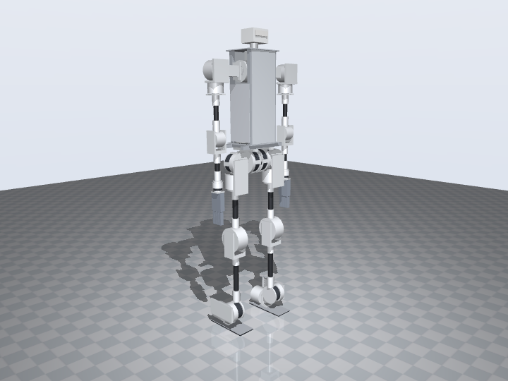
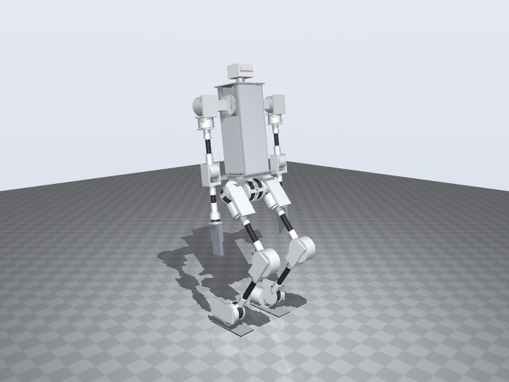
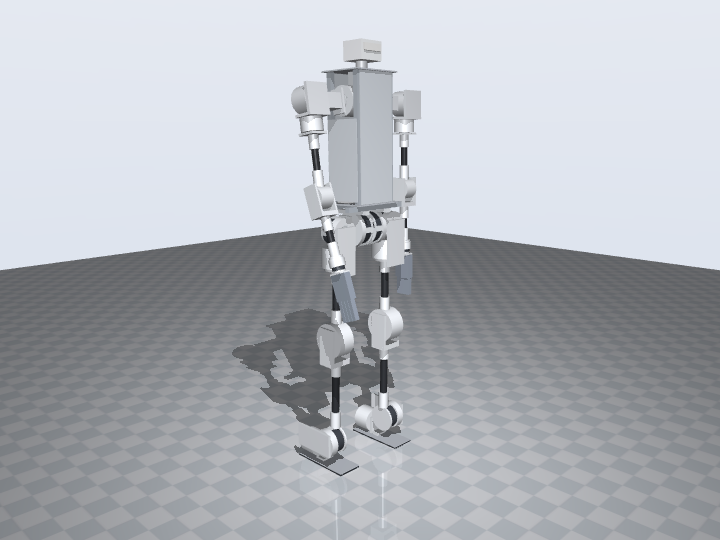

The production design: v1
Berkeley Humanoid Lite's extended, adult-sized configuration from the paper, built on RobStride actuators. A hip stack of pitch, abduction and rotation actuators on a pelvis rail; one carbon-fibre tube per thigh, shank, upper arm and forearm between self-contained actuator modules; an extrusion torso; a dexterous hand.
A styled variant of this design, with printed cover shells over the same mechanics, is in progress on the aesthetic page.
What it is, and where it comes from
Berkeley Humanoid Lite is 0.8 m and 16 kg with 22 printed cycloidal actuators. Its paper (Fig. 5) shows an adult-sized alternative: the same self-contained actuator modules, with carbon-fibre tubes bought online inserted between the leg modules to bring the legs to adult length, a hip arranged as pitch, abduction and rotation like most humanoids, and a dexterous hand. This design is that configuration with three substitutions:
- RobStride actuators in place of the printed cycloidal ones. RS04 (120 N·m) at the hip pitch and knee, where adult-length legs multiply the load; RS03 (60 N·m) at the other hip joints, the ankle pitch and the shoulder pitch; RS06, RS02 and RS05 down the arm. Every joint keeps the printed joint kit of the v0.2 design: mount ring with a support bearing, dowel-located coupler, child plate bolted through the coupler into the output boss. The RS04 kit is new and dimensioned from the RS04 manual.
- Tubes in the arms too. The paper extends only the legs. At adult height a 0.8 m robot's arms would end at the hips, so the upper arm and forearm are Ø25 tubes between the shoulder-yaw, elbow and wrist modules.
- An open hand. The paper's figure shows a dexterous hand without naming it. The design mounts Pollen Robotics' Amazing Hand (Apache-2.0, eight bus servos, under €200 in parts) on a printed wrist flange; the v0.2 parallel gripper fits the same flange.
Against v0.2, the all-printed budget design: the waist joint is gone (the pelvis bars bolt straight to the torso, as in BHL), the thigh block and shank plates become tubes and short printed cups, the torso plates and foot plates are laser-cut aluminium, the covers are polycarbonate, and 22 joints replace 23. The hands are the one place the production design costs more.
Specifications
Joints and actuators
Limits are software limits set by the collision audit below; mechanical range is larger where noted. Left side listed, right side mirrored; CAN IDs follow the v0.2 map without the waist.
| Joint | Actuator | Peak N·m | Axis | Range ° | Mount |
|---|
| Model | Qty | Peak / rated N·m | Mass g | Mounting | Output | Kit bearing |
|---|
Structure: tubes, cups and plates
Each limb is a chain of printed actuator cups joined by one carbon-fibre tube. A cup carries the actuator's mount ring and support bearing on one end and a Ø30 or Ø25 tube socket on the other; the tube is bonded 40 mm into the socket with structural epoxy and pinned by two M4 cross bolts drilled through after bonding, so the bolts carry the torque in shear and the bond carries bending. A 1000 mm Ø30 × 26 tube yields both thigh and both shank pieces; a 1000 mm Ø25 × 22 tube yields the four arm pieces. The torque that passes through a leg tube in torsion is the hip-yaw peak, 60 N·m: on a 2 mm wall that is 26 MPa of shear, inside the 50 to 80 MPa a 3K roll-wrapped tube is rated for, and the cross bolts carry it anyway.
| Link | Tube | Cut length mm | Between |
|---|
Where a flat part is cheaper and stiffer bought than printed it is bought: the torso top and bottom plates are 5 mm laser-cut 6061, the foot plates 3 mm 6061, the covers and electronics tray 3 mm polycarbonate, the pelvis two 2020 bars and the torso four 2020 uprights. What remains printed is the shape-critical set: 26 part types around the actuators, of filament in total, every part inside a 200 mm cube except the ankle bracket.
Fastener engagement
Every actuator screw length is computed, not chosen: the mount-ring thickness minus its counterbore, plus 75 to 100 % of the actuator's thread depth, rounded to a stock length. The generator refuses any model for which no stock length meets that rule. This changed two ring thicknesses from v0.2 and would have caught v0.2's own lug screws, which are longer than the lug threads.
| Model | Mount-ring screws | Engaged / thread depth mm | Output screws | Engaged / thread depth mm |
|---|
Self-collision audit
The audit tests every part pair at the zero pose, in six preset poses, and through each joint's full range in 13 steps, with tubes declared inside their sockets and actuators inside their cups. Results after the last change are in the table; the ranges above are what the audit allows.
| Check | Result | Note |
|---|
Does it stand? Physics check
The same MuJoCo check as the v0.2 page, on the v1 URDF: a floor, a floating base, one torque-limited position servo per joint, no balance controller. The servos hold the zero pose, legs and arms straight, as for v0.2. Longer feet give it more push margin than v0.2; the limit comes from the arms, which swing as rigid pendulums under stiff servos until the elbows saturate and the hands reach the thighs. A standing policy damps the arms; this check has no controller.



| Test | What happens | Max tilt | Settled tilt | Busiest leg joint | Result |
|---|
python3 tools/build_v1.py # robot_v1.json, bom_v1.json, foh_v1_0.urdf
python3 tools/check_collisions.py --model v1 --poses --sweep --steps 13
tools/.venv/bin/python tools/build_parts.py --model v1 # assets/print_v1/*.stl + manifest
tools/.venv/bin/python tools/sim_stand.py --model v1 --render # sim_results_v1.json, framesPrinted parts
Twenty-six part types, left side as files and mirrored in the slicer where marked. The full table with downloads, masses and print orientation is on the printing page; the zip and manifest are below.
| Part | Qty | Material | Mass g | Envelope mm |
|---|
Bill of materials
Priced , US vendors. The full itemised list with vendors and notes is on the BOM page.
| Section | Covers | Subtotal |
|---|
What production readiness still needs
- Joint-kit test (v0.3): print one RS04 cup, bolt it to an actuator, load it to 120 N·m; measure coupler creep and ring deflection. This is the same test the v0.2 roadmap calls for and the one result everything above depends on.
- Tube joint pull and torsion test: one bonded, cross-bolted Ø30 socket to failure. The analysis says the bond and bolts are far from their limits; the test says whether the printed socket is.
- Hand wrist pattern: confirm the Amazing Hand's current wrist mounting against the flange drawing before printing.
- Walking policy: the URDF is ready for Isaac Lab or MuJoCo Playground; the software page lists the path.